Explore Paris
A Brief History
Paris grew from a Celtic and Roman settlement on the Seine into the capital of the French monarchy, the Revolution of 1789, and the modern republic. Medieval churches and royal palaces expanded on the Île de la Cité and Right Bank before Baron Haussmann reshaped boulevards and parks in the 19th century. Railways, world fairs, and national museums consolidated its role as a cultural and administrative center.
Attractions Map
Top Sights & Activities
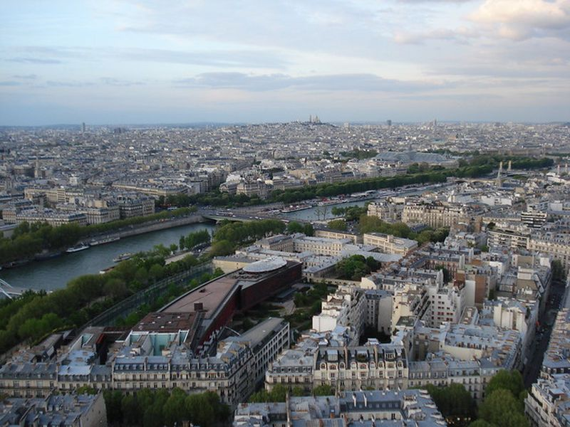
Eiffel Tower
The Eiffel Tower was built for the Exposition Universelle of 1889 and designed by Gustave Eiffel's engineering company. At 330 metres it marked a new scale of iron construction in Paris and became the city's most recognized modern landmark. Visitors can climb or ride lifts to viewing platforms with wide panoramas over the Seine and historic districts.
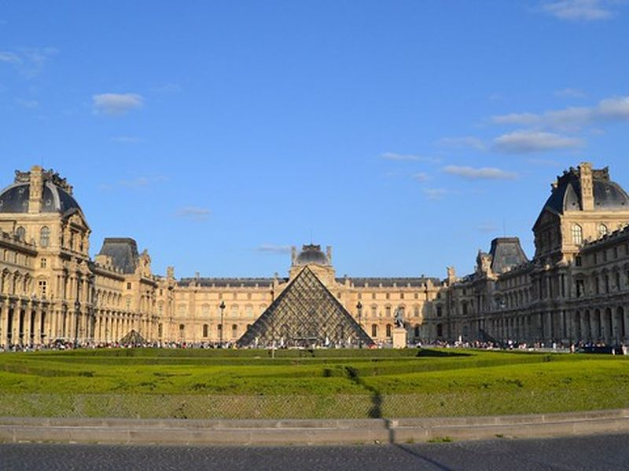
Louvre Museum
The Louvre grew from a medieval royal fortress and palace into the national museum opened to the public in 1793. Its courtyards, galleries, and collections connect the history of French monarchy with the formation of a republican museum. The building spans centuries of architectural change from fortress walls to the glass pyramid entrance.
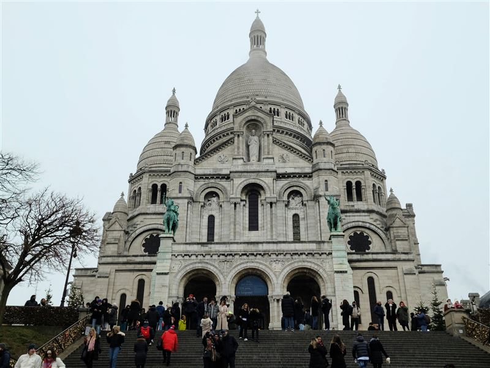
Basilique du Sacré-Cœur de Montmartre
Sacré-Cœur was built between 1875 and 1914 on Montmartre after the Franco-Prussian War and the Paris Commune. Its hilltop position and white travertine exterior make it a major landmark over northern Paris. The basilica remains an active church, and visitors can enter the nave without charge or pay to climb the dome.
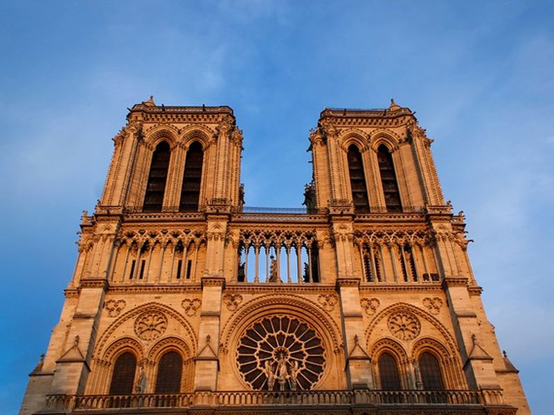
Notre-Dame Cathedral of Paris
Notre-Dame was begun in the 12th century and became one of the principal Gothic cathedrals of France. Its place on the Île de la Cité tied it to the religious and political center of medieval Paris. After the 2019 fire, restoration work continues, but the cathedral remains open for worship and limited public visits.
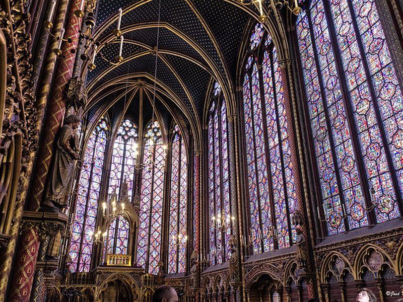
Sainte-Chapelle
Sainte-Chapelle was built in the 1240s by Louis IX to house major relics within the royal palace complex on the Île de la Cité. Its tall stained-glass walls remain one of the clearest monuments of French Rayonnant Gothic. The upper chapel's windows depict biblical scenes across fifteen panels of vivid medieval glass.
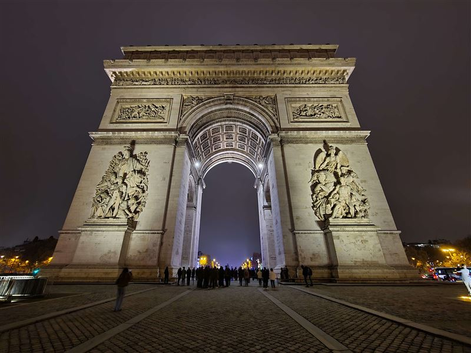
Arc de Triomphe
The Arc de Triomphe was commissioned by Napoleon in 1806 and completed in 1836 under Louis-Philippe. It anchors the western end of the historic axis of Paris and later became a major site of national commemoration, including the Tomb of the Unknown Soldier. A spiral stair leads to a roof terrace with views along the Champs-Élysées.
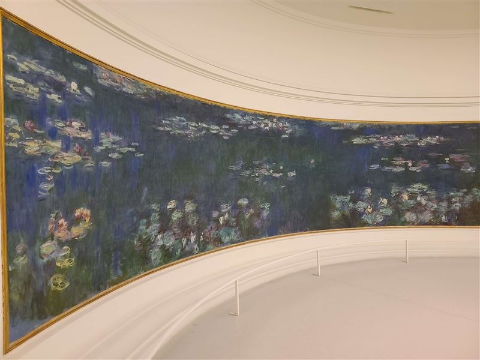
Musée de l'Orangerie
The Orangerie on the edge of the Tuileries Gardens became a museum in the 20th century and is known for Monet's Water Lilies installations in two oval rooms. The building links former royal garden space with modern state museum culture and also holds works by Cézanne, Matisse, and other early modern painters.
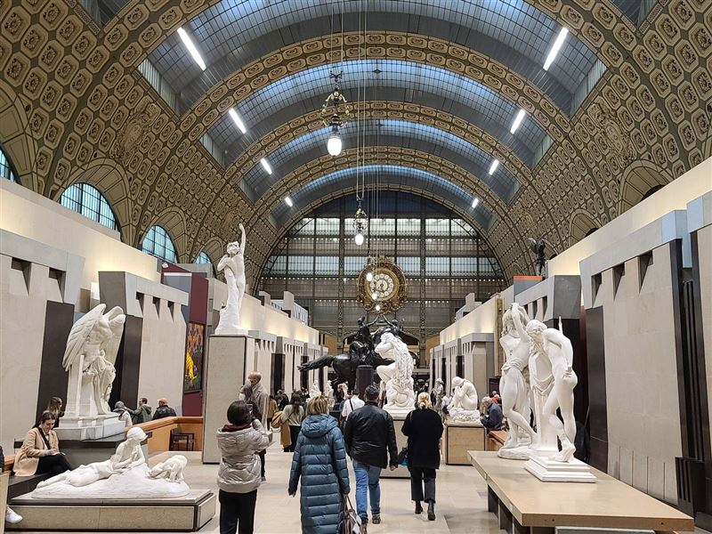
Musée d'Orsay
The Musée d'Orsay occupies a former railway station built for the 1900 Exposition Universelle and converted into a museum in 1986. Its collections focus on 19th-century art and the transition from academic painting to Impressionism and early modern movements. The grand hall and clock face preserve the building's transport heritage.
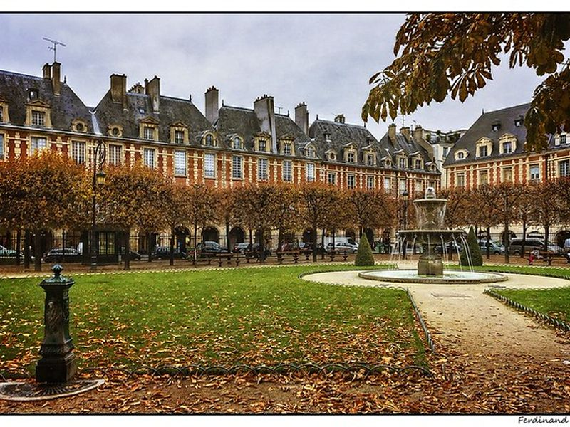
Place des Vosges
Place des Vosges was laid out in the early 17th century as one of the first planned royal squares in Paris. Its arcades and brick-and-stone facades reflect the urban design of the Marais under Henri IV. The square remains a public space where residents and visitors walk beneath the covered galleries that surround the central lawn.
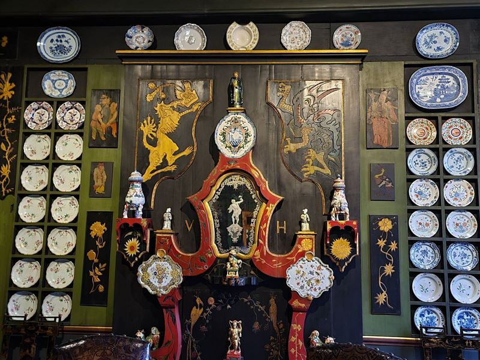
Maison de Victor Hugo
Victor Hugo lived in the Place des Vosges apartment from 1832 to 1848, and the museum now presents his life and work within the rooms of the former residence. It connects literary history with the domestic interior of the 19th century, displaying manuscripts, portraits, and furniture from his years in exile and public life.
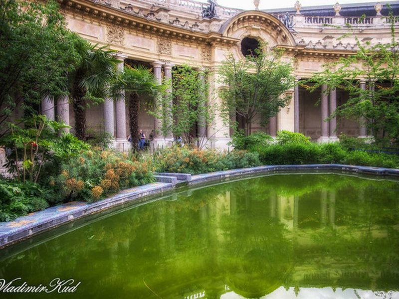
Petit Palais
The Petit Palais was built for the 1900 Exposition Universelle and now houses the City of Paris Museum of Fine Arts. Its Beaux-Arts architecture, courtyard garden, and permanent collections form part of the ceremonial avenue around the Champs-Élysées. General admission to the permanent galleries is free for all visitors.
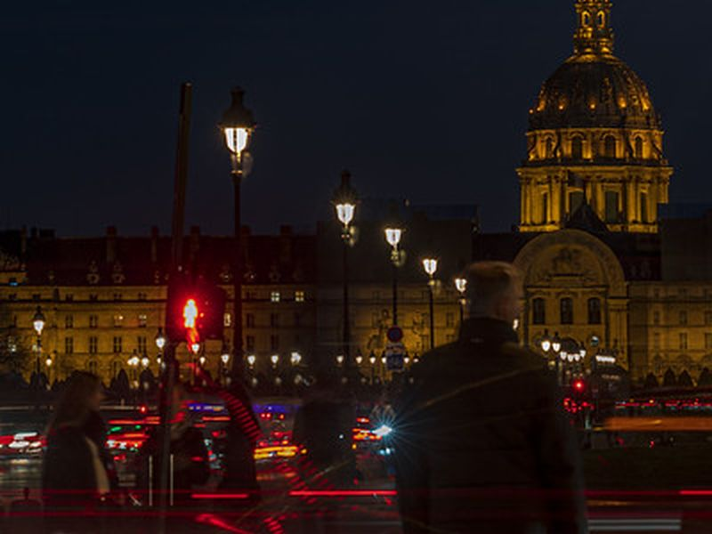
Esplanade des Invalides
The Esplanade des Invalides is the broad public lawn facing the Invalides complex and the Seine. It frames one of the major military and ceremonial landscapes of central Paris, linking the Hôtel des Invalides with the riverfront. The open grass is used for public events, recreation, and views toward the gilded dome.
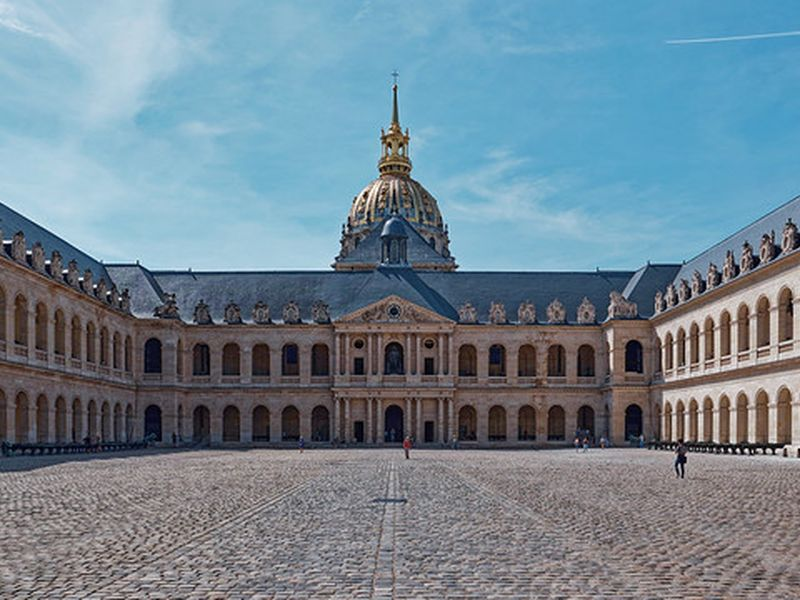
Hôtel des Invalides
The Invalides complex was founded by Louis XIV in the 17th century as a hospital and residence for disabled soldiers. It now houses army museums and Napoleon's tomb under the Dôme des Invalides. The courtyards, chapel, and museum galleries trace French military history from the early modern period to the world wars.
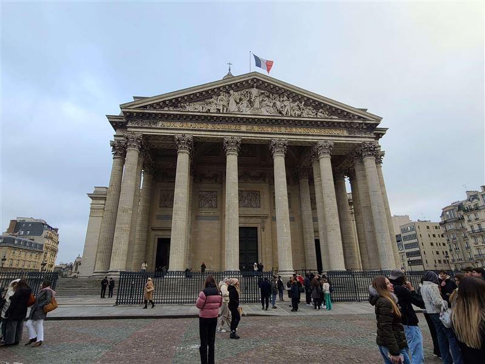
Panthéon
The Panthéon was built in the 18th century as the church of Sainte-Geneviève and later turned into a secular mausoleum for notable French figures. Its neoclassical dome and crypt reflect the political shifts between monarchy, revolution, and republic. Visitors can see the Foucault pendulum and tombs of writers, scientists, and statesmen.
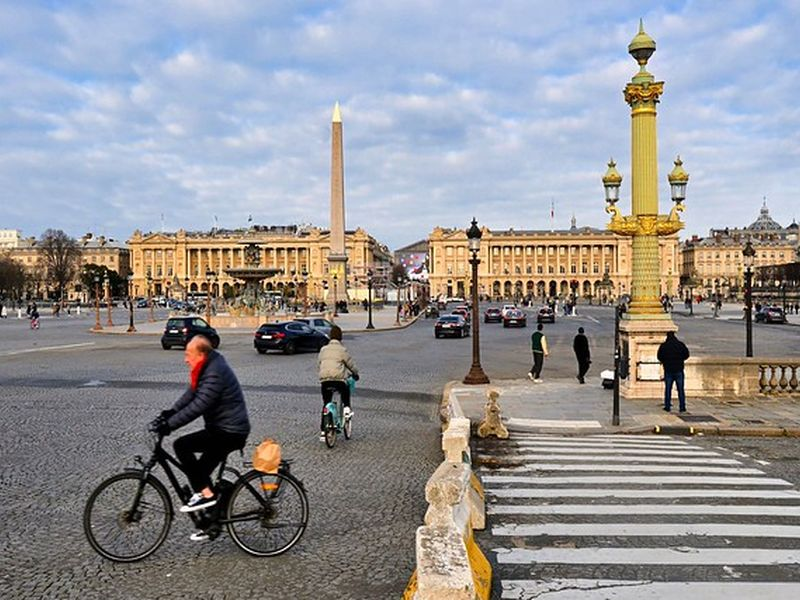
Hôtel de la Marine
The Hôtel de la Marine was built in the 18th century on Place de la Concorde and long served the French naval administration. It is now a restored monument and museum presenting state interiors, furniture, and collections from the ancien régime through the 19th century. The loggia offers views over the square and its obelisk.
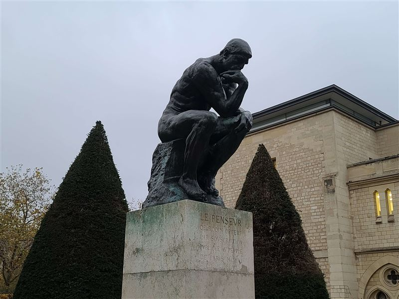
Musée Rodin
The Rodin Museum opened in the former Hôtel Biron and garden, where Auguste Rodin lived and worked from 1908. The site links sculpture, architecture, and landscape in a former private mansion used as a museum since 1919. The garden displays bronzes including The Thinker, while the house holds plaster and marble works.
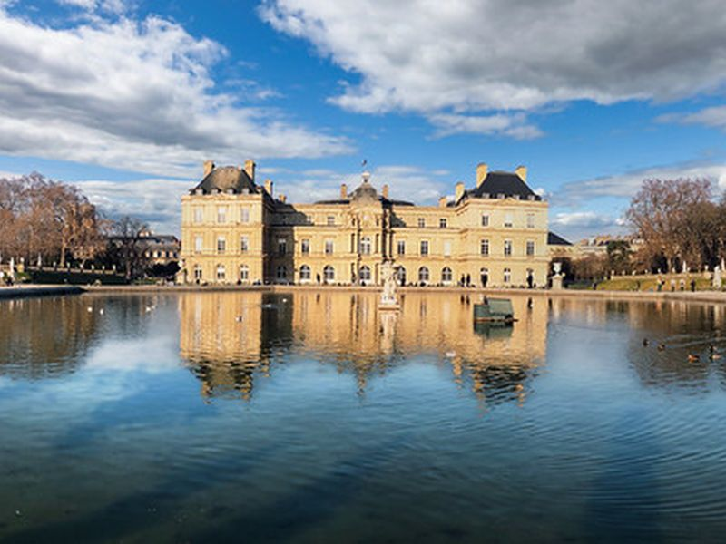
Jardin du Luxembourg
The Luxembourg Garden was laid out for Marie de' Medici in the 17th century and later became a major public park on the Left Bank. The garden joins formal planning, civic use, and the nearby senate complex. Tree-lined alleys, fountains, and the Medici Fountain remain popular with residents for walking, reading, and children's play.
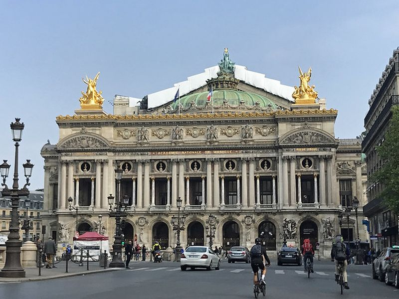
Palais Garnier
The Palais Garnier was completed in 1875 as the opera house of the Second Empire and remains one of the key buildings of Haussmann-era Paris. Its grand staircase, auditorium, and facade shaped the modern theater district around the Opéra metro stop. Guided visits reveal the ceiling painted by Chagall and the elaborate public rooms.
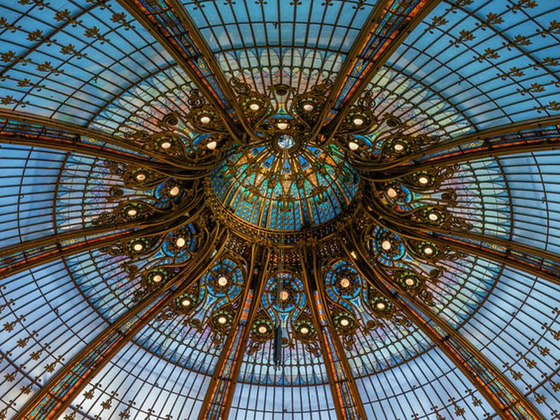
Galeries Lafayette Haussmann
Galeries Lafayette Haussmann grew from a department store founded in the late 19th century and became known for its central Art Nouveau dome and Paris retail culture. The building reflects the rise of modern commercial architecture in the capital. Visitors can enter the main hall and rooftop terrace without charge to view the dome and city skyline.
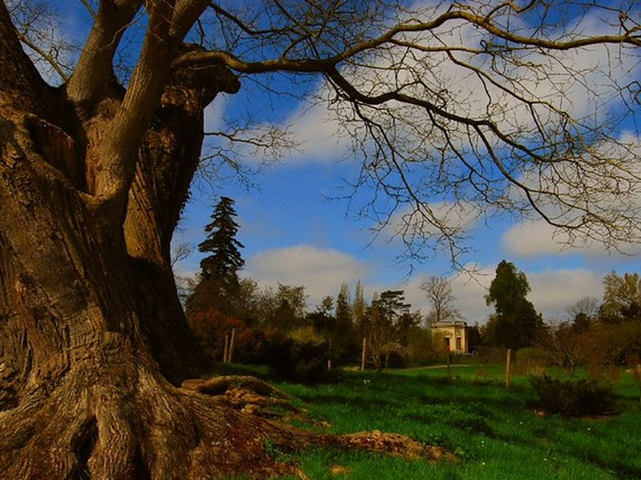
Château de Versailles
The Palace of Versailles was expanded under Louis XIV into the ceremonial center of the French monarchy. State rooms, the Hall of Mirrors, and court apartments shaped the political culture of the ancien régime. The palace sits at the heart of a vast estate that includes formal gardens, the Trianon palaces, and the estate of Marie-Antoinette.
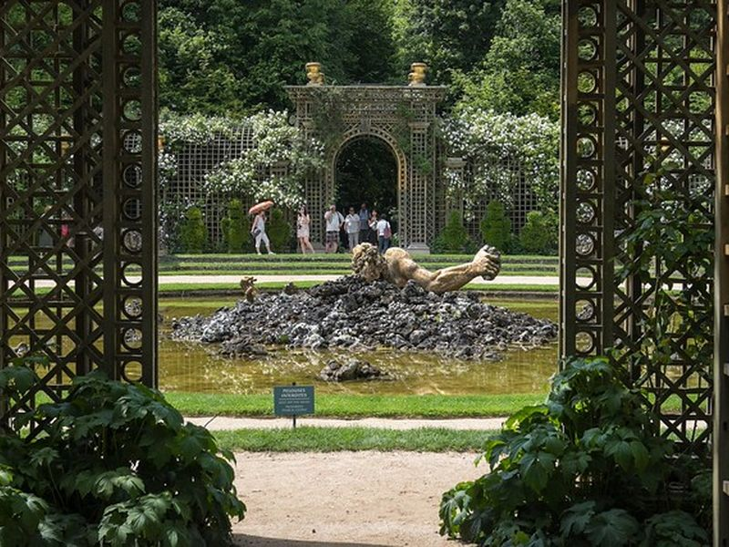
Gardens of Versailles
The Gardens of Versailles were laid out by André Le Nôtre to extend the palace into a vast planned landscape of parterres, fountains, sculpture, and axial alleys. They remain a major part of the Versailles estate and court setting. On fountain-show days, timed water displays animate the groves and basins along the central axis.